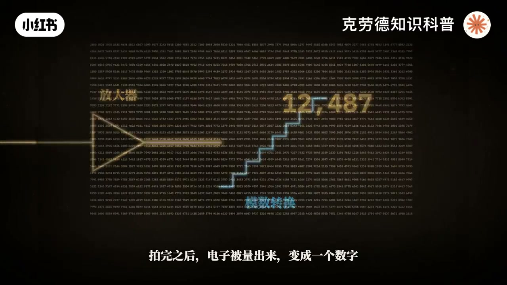
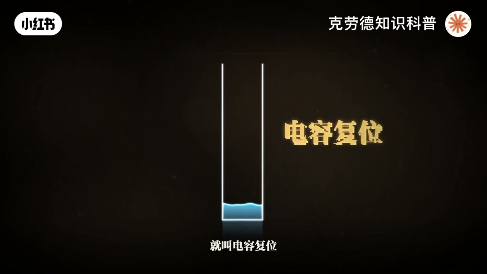
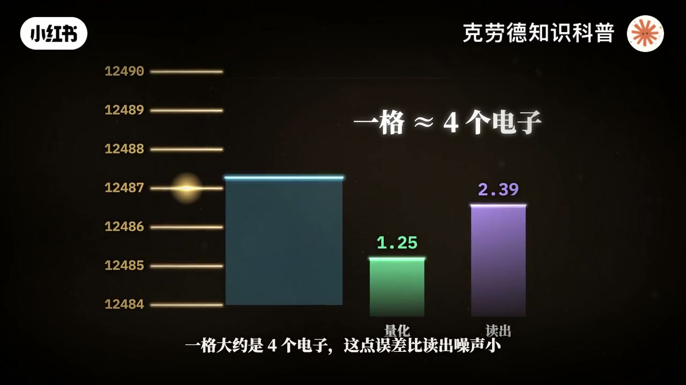
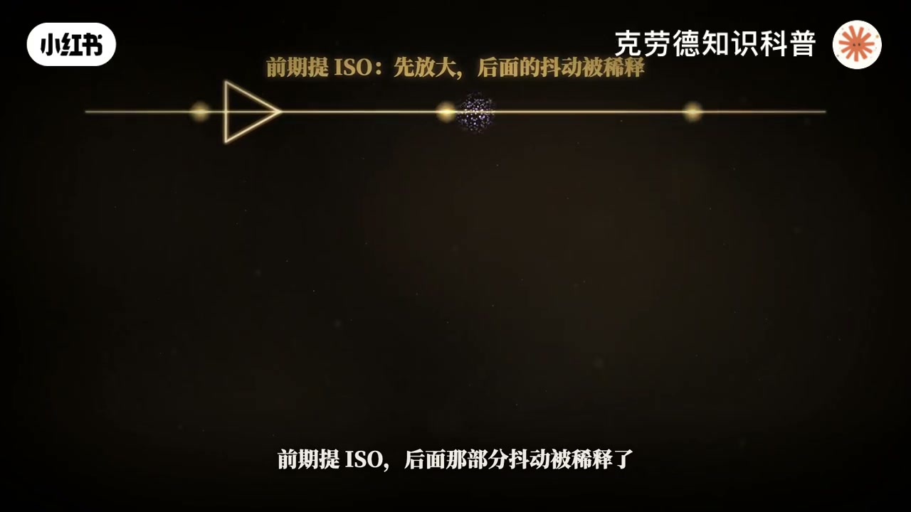
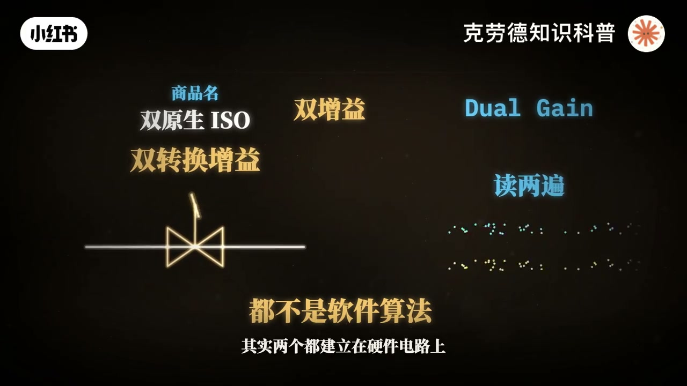
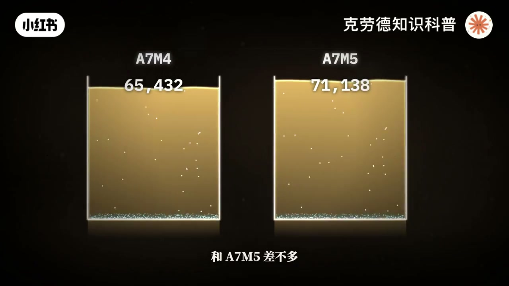
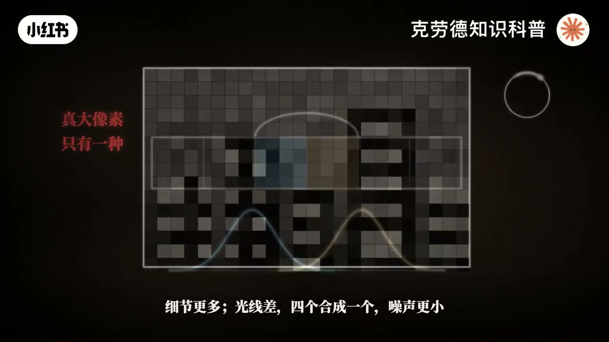
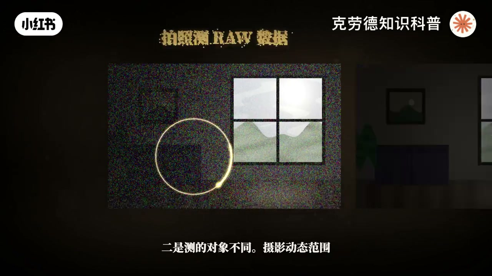
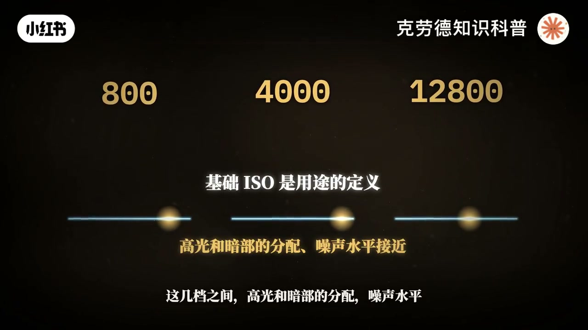
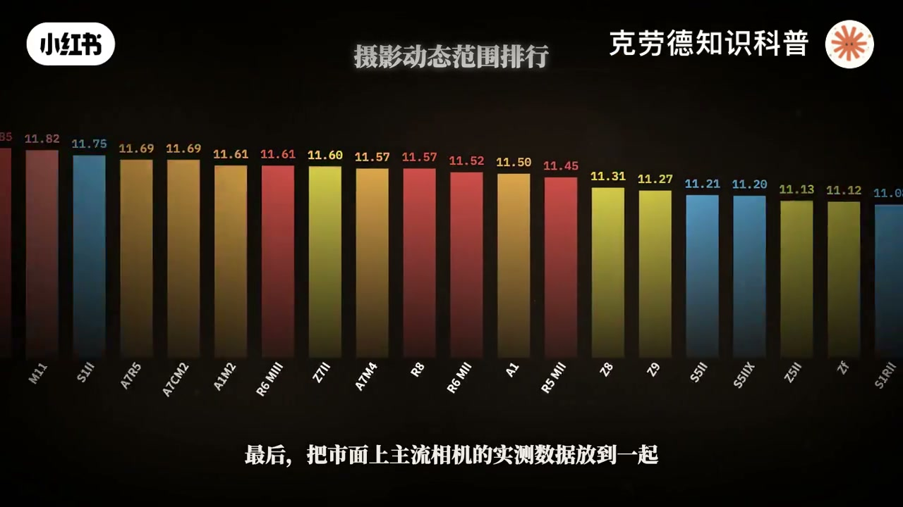

内容要点
「ISO如何影响相机动态范围？双原生又是什么？」教程要点：这一期我们把相机的动态范围从头到尾讲透 → 动态范围说白了就是 → 一张照片里最亮和最暗的地方 → 能同时保留多少细节；详见正文。
知识结构
这一期我们把相机的动态范围从头到尾讲透
放大器后面的
速做相位对焦
- 8.4微米的大像素快得多
这一期我们把相机的动态范围从头到尾讲透
00:00–07:07这一期我们把相机的动态范围从头到尾讲透
这一期我们把相机的动态范围从头到尾讲透；动态范围说白了就是；一张照片里最亮和最暗的地方；能同时保留多少细节；逆光拍人 窗外不白 脸也不黑；靠的就是它；它有多反直觉；同一台索尼A7M5 同一块传感器；同样的光只把机械快门换成电子快门；暗部的噪声就变成了四倍；动态范围少了将近一当半；要弄明白这种事；得从一粒光子说起；一束光照进相机；其实是无数粒光子；它们穿过镜头落在传感器上；A7M5的传感器上；排着大约3300万个像素；每个只有5微米宽；大约是头发丝的十几分之一；每个像素头上盖着一片彩色滤镜；红 绿 蓝；只放一种颜色进去；所以每个像素其实只知道一种颜色；光子撞进硅里；打出一个电子；电子被关进像素里的一个小水桶；快门开着的这段时间；水桶一直在攒电子；拍完之后；电子被量出来；变成一个数字；3300万个数字；就是RAW文件；再用香菱向素补全另外两种颜色；一张照片就出现了；回到这个水桶；A7M5的一个像素；实测大约能装71000万个电子；这个数叫满景容量；水桶满了；再来的光就全溢出去了；高光变成一片死白；这就是动态范围的第一条边界；天花板；水桶能装多少；大致看向素面积；A726的像素面积；只有它的一半；满景也就36000；A7S3的面积是它的2.7倍；能装22万多个；很多人把水桶和电容当成一个东西；其实是两个；水桶负责攒电子；这个位置叫感光区；旁边还有一根很小的凉桶；它就是电容负责测量；曝光的时候；电子都存在水桶里；曝光结束；闸门打开；电子倒进凉桶；相机没办法直接看水桶；它只能看凉桶里的水位；凉桶里的水位就是电压；电子越多；电压越高；同样一杯水倒进气管；水位很高；倒进粗管；水位很低；电容小就是气管；电容大就是粗管；一个电子能把水位抬高多少；这个比值就叫转换增益；所以记住这一句；管子越细；增益越高；管子越粗；增益越低；细管是高增益；粗管是低增益；水位要变成数字；靠的是后面这段独出电路；我们叫它尺子；一颗小晶体管；把水位接出来；放大器放大；魔术转换器给出一个读数；这个读数；就是真正写进RAW文件的数据；RAW里存的不是电子的个数；也不是电压；而是这把尺子量出来的数字；14位的RAW；就是这把尺子上；有16384个；那水桶大了；量桶要不要跟着变大；要；因为水位不能无限高；电路的电压就这么大；水位碰到上限；就量不了了；细管很快就满；电子还堵在门口；想把7万的电子一次量完；管子就必须够粗；所以水桶越大；量桶就得越粗；一个电子抬起的水位；也就越低；这是大水桶的代价；每次测量之前；还得先把量桶倒空；不然上一次的水还在里面；这一步就叫电容复位；但量桶倒不干净；每次残留多少都不一样；解决办法很聪明；倒空之后；先量一次残留；再把电子倒进去；量第二次；两次一减；残留就抵消了；这一招叫相关双彩样；尺子讲完；正好讲ISO；ISO调高；并不会多进一滴光；水桶收到的电子；一个也没多；ISO做的事；是把量桶的水位；放大之后再读；ISO提高一倍；读数就涨得快一倍；和尺子只有这么多格；放大一倍；水桶才装一半；读数就到顶了；所以ISO每提高一档；能用上的水桶就少一半；天花板降低一档；现在讲噪声；从光子到照片这条路上；噪声一共有六种；光子噪声；暗电流噪声；复位噪声；独出噪声；量化噪声；还有固定模式噪声；我们沿着这条路；一个一个来看；第一种光子噪声；光子是一粒一粒来的；像下雨；同样的时间；每个杯子接到的雨滴；都不一样；这不是相机的毛病；是光本身的性质；波动的大小；等于数量开根号；100粒差10粒；10000粒差100粒；光越多；波动比例越小；所以亮处干净；暗处脏；第二种；暗电流噪声；就算没有光；龟的热运动；也会生出电子；混进水桶；温度越高；曝光越长；就越多；长曝光和长时间露视频时；它才站出来；第三种；复位噪声；就是刚才两桶；倒布干净留下的那点差异；好消息是；它基本被两次测量相减抹掉了；第四种；独出噪声；也就是尺子的抖动；两桶旁边那颗小晶体管；里面的电子在热运动；龟里的缺陷；还会时不时抓住；又放开一个电子；无数就会跳；后面的放大器和魔术转换器；也各添一点；复位那一招；减不掉它；抖动的幅度；差不多是固定的；粗管里；一个电子只抬高一点点；尺子一抖；就相当于好几个电子；气管里；同样的抖动；可能还不到一个电子；第五种；量化噪声；尺子的刻度；是一格一格的；水位落在两格中间；只能45度；A7M5在ISO100下；一格大约是4的电子；这点误差比；读出噪声小；影响不大；第六种；固定模式噪声；像素之间有微小的差异；电路也有行列差异；提亮暗部时；就变成横纹竖纹；随机的噪点；大脑能忽略；规则的条纹；却特别刺眼；这些噪声叠在一起；最大的内向说了算；最暗的地方；读出噪声说了算；亮起来之后；光子噪声接管；盖上镜头盖；水桶是空的；读数却不是零；而是在零的上下乱跳；把尺子的抖动折算回电子；A7M5用机械快门时；大约相当于2.4的电子；比这层抖动还弱的信号；就被淹没了；这就是第二条边界；地板；天花板除以地板；71138除以2.39；大约是3万倍；量一倍较一档；3万倍相当于连续翻倍；将近15次；这就是14.86档；动态范围；一头是水桶能装多少；一头是读出有多安静；提高ISO之后；地板也会往下走一点；但走到一定程度就走不动了；原因在放大器的位置；尺子的抖动分两部分；放大器前面的；主要是那颗小晶体管



07:06–15:19放大器后面的
放大器后面的；主要是魔术转换器；放大器前面的抖动；会和信号一起被放大；两者的比例不变；放大器后面的抖动；不被放大；信号变大了；它就相对变小了；所以提高ISO；地板会往下走；可是后面这部分；很快就被稀释的差不多了；剩下的全是放大器前面的；它和信号一起放大；比例永远不变；ISO再高也减不掉；A7M补从ISO100的2.39；到200的1.61；到400的1.38；再往上到1600；也只是1.16；ISO400之后；地板基本就平了；天花板每档砍半；地板却降不动；动态范围就一路往下掉；A7M补从ISO100的14.86；到ISO1600之上11.9；那后期提量和前期提高；ISO有区别吗；放大在相机里和放大在电脑里；差别只在一件事；放大器后面那部分抖动；前期提ISO；后面那部分抖动被稀释了；后期提量时；它已经混在数字里；只能跟着一起放大；所以ISO100拍完再提量；暗部的独出噪声是2.39；前期用ISO400是1.38；差了1.7倍；但从ISO400再往上；后面那部分已经没多少了；ISO400拍完提量；和前期直接拍ISO1600；独出噪声只差1.38和1.16；几乎一样；这时候后期提量反而更划算；因为低ISO还多保住了两档高光；那是不是永远用最低ISO；不是；决定画质的；首先是进了多少光；最低ISO的好处；是允许你把水桶装满；光本来就不够；水桶装不满；压低ISO只是让画面更暗；ISO减不掉放大器前面的抖动；想再降就只能从源头下手；换一根细的两桶；很多传感器在向苏里多；做了一个小电容和一个开关；开关接通；电容并上去就是粗管；低增益；开关断开；只剩细管高增益；第一ISO10天花板最重要；用粗管；ISO高了；能用的水桶本来就少了；细管也装得下；就切成细管；读出噪声一下子掉下来；A7S3在ISO1600切换；噪声从8.9直接掉到1.1；少了将近8倍；切换的那一档；动态范围不降反升；各家的切换点不一样；A7M4在ISO400；尼康Z8在500；松下S52在640；A7S3要到1600；一张照片只能选一种；这也是后期提量；唯一追不上的地方；提量只是放大数字；没办法把粗管换成细管；所以暗光下；至少要把ISO提到切换点；现在说名字；这里确实有文字游戏；这个开关的学名；较双转换增益；是像素理石打石的硬件；双原生ISO；基本就是厂家给它起的商品名；最乱的是双增益这个词；有时候它就是指这个开关；有时候比如索尼FX5上的Dual Bin；指的是另一件事；同一次曝光读两遍；不管哪种都不是软件算法；很多人以为双原生是硬件；双增益是算法；其实两个都建立在硬件电路上；想知道是不是真的硬件切换；就看RAW的独出噪声；有没有突然掉一个台阶；算法磨皮改变不了这个台阶；录视频时的两档ISO；比如A7M5的800和8000；也是这个切换；不过视频的数字比照片高八倍；这要解释一下；普通照片的ISO标定；中挥到传感器顶端；大约只留三档余量；S-LOG3要给高光流大约六档；就得把中挥在传感器上的位置；再往下压三档；也就是近光少八倍；所以传感器的状态其实没变；还是ISO100；相机却标成800；让你少给三档光；这个八倍就是多流出来的三档高光；800除以80100；8000除以81000；而照片RAW走电子快门的那条路线；独出噪声正好在ISO1000这里；从7.5掉到1.75；粗管宝高光；细管宝暗部；有没有办法；两个都要；有；同一次曝光；读两遍；一遍用细管暗部干净；一遍用粗管高光完整；再把暗部和亮部各取所长；拼成一张RAW；这叫合并独出；开头那个问题；现在可以回答了；A7M5用机械快门时；做的就是合并独出；独出噪声2.39；换成电子快门；只能走粗管这一路；噪声变成9.58；摄影动态范围少了1.46档；为什么非要机械快门；读两遍要花时间读得慢；电子快门的果冻就很严重；机械快门的帘子一落；把光挡住；就能安心慢慢读；A7R26拍照时也是这样；录视频开放了这个模式；只能在4K 30P以下用；果冻时间从7.2毫秒；涨到15.6毫秒；松下S12代也有类似做法；有研究发现它的基础；ISO是两次独出合并的；电影机更早；阿莱和佳能的传感器；都从每个像素分出高低两路；同时读出；所以记住区别；双原声是在粗管和细管之间；二选一；合并读出是两种都要；代价是读得更慢；动态范围就是水桶处以；读出噪声；上一代A7M4满景65000；和A7M5差不多；可读出噪声有4.6个电子；只有13.8档；再看一组奇怪的队伍；A7S3的像素面积；是A726的5倍多；水桶大了6倍；可动态范围反而更低；原因有三个；我们一次讲完；第一水桶大；两桶就得粗；一个电子换来的水位很低；尺子一抖；折算回来；就是好多电子；第二有人拆开A7S3的传感器；用显微镜一看；这个大水桶；其实是四个小水桶；4800万个感光单元；四个一组；这种结构叫四合一像素；据拆解分析；这四个小桶是各读一次；读完再用数字加起来；尺子抖了四次；噪声大约翻倍；A7S3的低增益读出噪声；高达14.4个电子；而A726只有1.5；第三也是最关键的；两台都是全画幅；面积一样；接到的光本来就差不多；把所有水桶的电子加起来；A7S3只多15%；可比到同样大小的照片上；A7S3的总读出噪声；是A726的四倍；这里要解释一个词；性噪比就是信号；是噪声的多少倍；刚才的14.86档；是单个像素；性噪比等于1的算法；信号和噪声一样大；就算分得出来；可实际看照片；暗部要干净；才看得下去；摄影动态范围；把门槛提到性；噪比20左右；并且按同样大小的照片折算；这个标准下；A7M5是12.45档；A7R6是12.55档；A7S3是11档；所以只要读出噪声够低；像素多了一倍也不是亏；真正决定收光总量的；是传感器面积；同样的技术；全画幅比半画幅；大约多0.6档；44x33的中画幅；比全画幅大约多0.4档；手机上用四合一更多；iPhone的主摄是4800万像素；每个只有1.22微米；默认把四个合成一个；变成2.44微米；输出1200万像素的照片；为什么不干脆做成大像素；因为小像素能换着用；光线好；按高像素输出；细节更多；光线差；四个合成一个；噪声更小；很多手机；还用相邻的小像



15:17–23:27速做相位对焦
速做相位对焦；合并的方式很关键；四个小桶的电子；到近同一根管子；只读一次；读出噪声；就只算一次；各读一次再相加；就像A7S3这样；噪声大约翻倍；iPhone能在1200万；和4800万之间切换；A7S3无论怎么设置；都只有1200万；查解发现；它的四个读数；在传感器内部；就已经加好了；才送出芯片；相机的处理器；根本拿不到4800万的数据；索尼为什么不直接做；真正的1200万大像素；官方没有解释；发布时甚至说；这台相机没有像素合并；目前最可信的解释是；手上已有现成的4.2微米设计；沿用它；比重新开发一个；8.4微米的大像素快得多；感光区太大；电子转移也更慢；更难做好；手机还可以让；四个小桶曝光时间不同；长的负责暗部；短的负责亮部；一次拍下更大的动态范围；代价是运动物体可能有重影；录视频和拍照；动态范围不一样；第一；视频每一帧都是电子读出；没有快门连；A7M5拍照时的合并读出；录视频用不上；第二；3300万像素缩成4K；四个像素合一个；随机噪声互相抵消；大约多一档；第三；视频有机内降噪和压缩；暗部细节会被抹掉一些；第四；Log曲线；要把高光和暗部压近10倍；能装多少；看曲线怎么分配；视频的动态范围；通常这样测；拍一张有21档亮度的灰阶卡；看最终的视频文件里；从亮到暗到哪一级；就分不清了；分不清的标准就是性噪比；性噪比1；信号和噪声一样大；这是国际标准用的门槛；只能说勉强能分辨；性噪比2；信号是噪声的两倍；实验室认为；这才算可用的暗部；所以；同一台机器；性噪比1的数字更高；厂家通常也更喜欢用它；为什么视频不用拍照；那个性噪比20；一是看法不同；照片可以停下来；放大盯着看；视频每秒24帧；噪点每一帧都在变；眼睛会把它平均掉；同样的噪声看着没那么脏；二是测的对象不同；摄影动态范围；算的是RAW数据；视频测的是相机最终输出的文件；缩放 降噪；LOD曲线都已经算在里面了；实验室测A7M5的4K S-LOD3；在ISO800下；性噪比2是12.4档；性噪比1是13.5档；到第二档ISO8000是11.1档和12.7档；这和拍照的12.45档；门槛不同；对象也不同；数字接近只是巧合；不能直接比；前面把A7S3说得不太行；那说的是低ISO；一道高ISO；它切到吸管；读出噪声只有1.13个电子；这是它真正的主场；录视频走的是电子快门路线；ISO1600下；A7S3的读出噪声是1.13；A7M5是1.64；A7R6是0.75；单看一个像素；A7R6还更安静；可整张画面；要把所有像素的抖动加起来；A7S3只有1210万个像素；抖动的次数最少；算到整张画面；它的总读出噪声；只有A7M5的5分之2；A7R6的3分之2；视频实测也对得上；A7S3在ISO12800下；心脏比2是12.1档；A7M5在更低的ISO8000下；只有11.1档；而且A7S3的这一档；和它最低ISO的12.4档；几乎没差；但换成拍照的标准；这个优势就没了；ISO6400的摄影动态范围；A7S3是6.24档；A7M5是6.48；A7R6是6.42；反而稍低一点；因为心脏比2是这个亮度；主角已经是光子噪声了；读出噪声影响很小；三台接到的光差不多；结果也就差不多；所以A7S3的暗光之王；准确地说；是在暗到读出噪声说了算的地方；它比别人干净；录视频时最明显；同时它读得快；全画幅4K只要8.7毫秒；A7M5是14.5毫秒；Sony FX伍标了三档基础；ISO800、4000和12800；是不是有三套硬件；Sony没有公开；Sony对基础ISO的定义也不是硬件；这几档之间；高光和暗部的分配；噪声水平都很接近；方便混解；所以有评测专门提醒；不能由此认定有三级硬件增益；我们可以用实测倒退；XOCN下；心脏比2；ISO800是10.6档；4000是10.1档；12800是9.1档；如果只是放大；ISO提高一档；动态范围差不多也要掉一档；800到4000放大了2.3档；实际只掉了0.5档；所以这一步有电路上的切换；4000到12800放大了1.7档；实际只掉了一档；心脏比1甚至只掉了0.4档；这一步同样不是单纯放大；很可能又切换了一次；所以这三档基础ISO；很可能对应三种电路状态；到底是三个电容；还是两种转换增益；再加一级放大；索尼没有公开；这只是根据实测的推断；FX5还有一个叫dual gain的模式；就是前面讲的读两遍；只能在ISO800这一档用；打开后；动态范围从10.6档升到13.4档；果动时间从5.6毫秒变成13.3毫秒；据索尼介绍；它只在暗部区域使用高增益的数据；尼康Z8和Z9用的是全堆站传感器；读出电路坐在像素下面；读完一整幅；大约只要270分之一秒；也就是3.7毫秒；快到不再需要机械快门；取消之后；没有快门寿命的担心；没有震动；取景也不会黑屏；换镜头时；还能用保护盖挡灰；取消快门这个动作；本身不影响动态范围；但背后的选择会；读得快的电路往往更吵；同样4570万像素；Z72代读出噪声4.2；Z87；摄影动态范围少了约0.3档；没有帘子；拍照时也就没办法慢慢读两遍；最后说怎么用；光够用；就用最低ISO曝光给足；让水桶尽量装满；用A7M5；记得用机械快门；才有合并读出；如果快门和光圈都到头了；先绑高光；再把ISO提到地板降不动；或者切换点的位置；用电子快门拍暗光；A7M5至少要到；ISO1000左右；再往上提就交点后期；最后；把市面上主流相机的实测数据；放到一起；全画幅里；还在最前面的两台；A7R6和A7M5；都用上了合并读出；他们追上了一亿像素的中画幅；想知道自己的相机属于哪一种；就看这张表；一张照片的动态范围；说到底只有两件事；水桶能装多少；读出有多安静；从一粒光子到一张照片；传感器上的每一个设计；都可以看到；这张照片的动态范围；是一张照片的动态范围；一张照片的动态范围；是一张照片的动态范围；一张照片的动态范围；是一张照片的动态范围；一张照片的动态范围；一张照片的动态范围；传感器上的每一个设计；都是在这两件事之间做取舍；看懂了这些；下次按下快门；你掉的就不再只是参数；而是这一颗的光；能被留下多少




口述/画面要点（40段）
结合 Whisper medium 与画面大字整理；专有名词已校对。
这一期我们把相机的动态范围从头到尾讲透
动态范围说白了就是
一张照片里最亮和最暗的地方
能同时保留多少细节
逆光拍人 窗外不白 脸也不黑
靠的就是它
它有多反直觉
同一台索尼A7M5 同一块传感器
同样的光只把机械快门换成电子快门
暗部的噪声就变成了四倍
动态范围少了将近一当半
要弄明白这种事
得从一粒光子说起
一束光照进相机
其实是无数粒光子
它们穿过镜头落在传感器上
A7M5的传感器上
排着大约3300万个像素
每个只有5微米宽
大约是头发丝的十几分之一
每个像素头上盖着一片彩色滤镜
红 绿 蓝
只放一种颜色进去
所以每个像素其实只知道一种颜色
光子撞进硅里
打出一个电子
电子被关进像素里的一个小水桶
快门开着的这段时间
水桶一直在攒电子
拍完之后
电子被量出来
变成一个数字
3300万个数字
就是RAW文件
再用香菱向素补全另外两种颜色
一张照片就出现了
回到这个水桶
A7M5的一个像素
实测大约能装71000万个电子
这个数叫满景容量